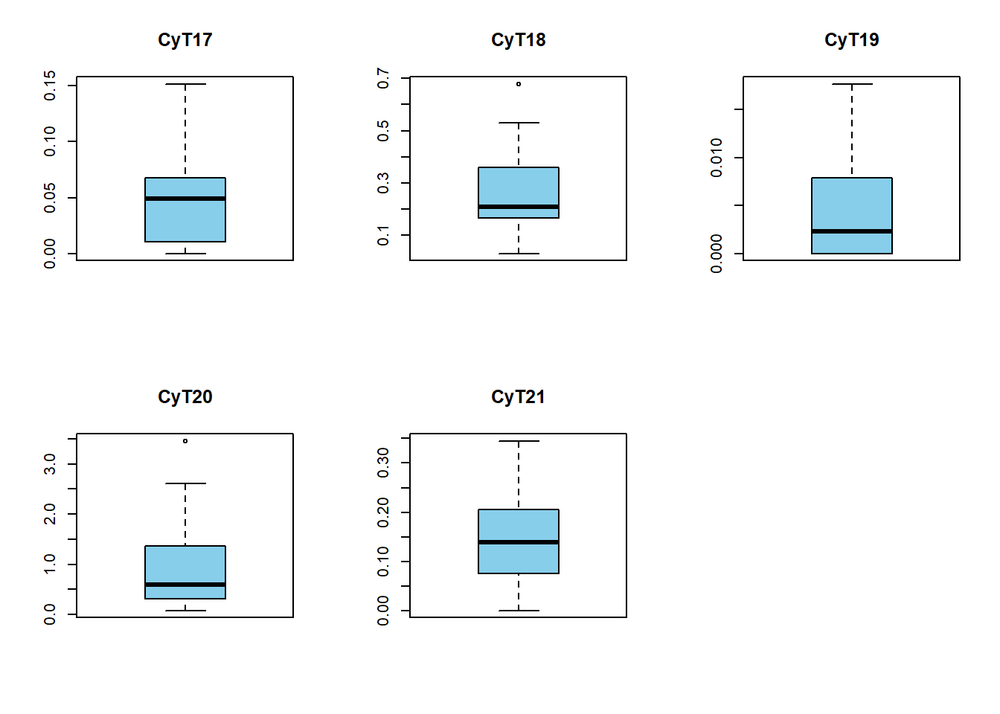

Taller Uno
Punto 1.
Con los datos del ARWU elaborar un diagrama de barras que muestre las primeras 20 universidades según World.Rank, con barras de la altura del indicador de premios nobel. ¿Hay universidades que se distinguen por su indicador de premios Nobel? ¿Cuáles?
Seleccionar las primeras 20 universidades según el World Rank
Crear el gráfico
Con base en el diagrama que has generado, se puede observar que ciertas universidades destacan claramente en el indicador de premios Nobel. Entre ellas:
- Harvard: Tiene el valor más alto en el indicador de premios Nobel, mostrando una gran cantidad de premios asociados.
- Stanford y MIT: También presentan barras notoriamente altas, lo que indica un número significativo de premios Nobel.
- University of Chicago y University of California, Berkeley: Estas universidades también tienen valores elevados, aunque un poco menores en comparación con Harvard.
Estas universidades se distinguen claramente por tener un alto número de premios Nobel en comparación con las demás en el gráfico, lo que refleja su prominencia en la producción de investigación de alto impacto.
Punto 2.
Utilizar los datos del RankLatino para elaborar gráficos de dispersión de SC.Lac.Ranking vs. WEB.Ranking.LA y de QS.Ranking vs. WEB.Ranking.LA. ¿Hay inconsistencias en las posiciones de las universidades entre los rankings SC.Lac.Ranking vs. WEB.Ranking.LA?. ¿Y entre QS.Ranking vs. WEB.Ranking.LA.?
SC.Lac.Ranking vs. WEB.Ranking.LA
QS.Ranking vs. WEB.Ranking.LA
- Las gráficas muestran la relación entre SC.Lac.Ranking vs. WEB.Ranking.LA y QS.Ranking vs. WEB.Ranking.LA para las universidades en América Latina.
- Las universidades marcadas en rojo representan aquellas en las que la diferencia entre ambos rankings es mayor a 100 posiciones, indicando inconsistencias significativas en sus posiciones. La línea diagonal roja muestra el ideal de correlación perfecta (donde ambos rankings coincidirían).
Análisis de inconsistencias:
En ambos gráficos, se observa que existen varias universidades con diferencias significativas entre los rankings. Esto indica que los criterios o metodologías utilizados para el SC.Lac.Ranking, QS.Ranking y WEB.Ranking.LA pueden diferir sustancialmente, reflejando distintos enfoques para medir el desempeño o visibilidad de las universidades.
Punto 3.
Con los datos del arwu elaborar una matriz de dispersión para los rankings mundial, regional y nacional con las densidades aproximadas en la diagonal y las correlaciones en el triángulo inferior de la matriz.
El gráfico muestra que existe una correlación lineal de 0.62 entre los rankings Regional y World, lo que indica una relación lineal moderadamente fuerte. Por otro lado, la correlación entre los rankings Regional y National es de 0.73, lo que sugiere una relación lineal más fuerte. Esto implica que los rankings están alineados en la forma en que evalúan a las universidades. Ahora, la correlacion lineal entre el ranking World y Nacional reflejan que no tienen ninguna relación lineal.
Punto 4.
Elaborar una gráfica de cuatro variables del tipo Gráfica 1.10, ejemplo 1.6.1 con datos del arwu que contenga en las abscisas el ranking mundial, en las ordenadas el ranking regional, el tamaño de los puntos sea el indicador de premios nobel o medallas Field (Award) y el color corresponda a las publicaciones altamente citadas (HiCi).¿Se puede identificar algún patrón o tendencia entre estas cuatro variables?
Vemos como hay una gran relación con el gráfico de dispersión entre el Ranking Mundial y Regional, solo que se encuentra reflejado respecto al eje x
Punto 5.
Construir una nube de palabras que muestre las primeras 20 universidades según el según World.Rank, por su número de publicaciones altamente citadas (HiCi). ¿Se puede afirmar que las primeras 10 se distinguen claramente de las otras 10, por su número de publicaciones?
Institution World.Rank HiCi
Harvard Harvard 1 100.0
California, Berkeley California, Berkeley 2 69.0
Stanford Stanford 3 87.6
MIT MIT 4 66.8
Cambridge Cambridge 5 53.9
California I of Tech California I of Tech 6 56.7
Princeton Princeton 7 61.1
Columbia Columbia 8 56.2
Chicago Chicago 9 50.9
Oxford Oxford 10 48.8
Yale Yale 11 58.5
Cornell Cornell 12 54.3
California, Los Angeles California, Los Angeles 13 56.9
California, San Diego California, San Diego 14 60.2
Pennsylvania Pennsylvania 15 57.1
Washington Washington 16 53.9
Wisconsin - Madison Wisconsin - Madison 17 51.9
The Johns Hopkins The Johns Hopkins 18 42.0
California, San Francisco California, San Francisco 18 53.4
The of Tokyo The of Tokyo 20 42.0¿Se puede afirmar que las primeras 10 se distinguen claramente de las otras 10, por su número de publicaciones? Una vez generada y visualizada la nube de palabras, puedo afirmar que resulta muy difícil distinguir las 10 universidades más destacadas de las otras diez (bajo el criterio del número de publicaciones). Para obtener una interpretación más clara, es necesario considerar otros criterios adicionales.
Punto 6.
Con los datos del archivo ciudadesC elaborar diagramas de cajas (Boxplots) para visualizar si hay datos atípicos en las variables Ciencia y Tecnología (C&T), de Infraestructura (INFRA), o de Finazas públicas (FIN).
Ciencia y Tecnología (C&T)

En los gráficos de cajas notamos que hay dos variables que tienen al menos un dato atipico, como lo es la variable CyT18 y CyT20
Infraestructura (INFRA)
En los gráficos de cajas notamos que hay seis variables que tienen al menos un dato atipico, como lo son las varibles:
INFRA26
INFRA27
INFRA28
INFRA33
INFRA37
INFRA38
Finazas públicas (FIN)
En los gráficos de cajas notamos que hay seis variables que tienen al menos un dato atipico, como lo son las varibles:
FIN40
FIN41
FIN42
FIN43
FIN44
FIN46
Punto 7.
Para las variables que tienen datos atípicos identificadas en el ejercicio 6 buscar una transformación que estabilice la varianza y mostrar graficos comparativos de datos originales y datos transformafos como en el ejemplo 1.9.1.
Se generan los graficos respectivamente a las transformacion, se que la transformación que tiene mas estabiliza los datos es la transformación de Box- Cox o de la Yeo-Johnson.
[1] "CyT18"[1] "CyT20"
[1] "INFRA26"[1] "INFRA27"[1] "INFRA28"[1] "INFRA33"[1] "INFRA37"[1] "INFRA38"[1] "FIN40"[1] "FIN41"[1] "FIN42"[1] "FIN43"[1] "FIN44"Para lla variable FIN46 al tener un dato negativo no se puede realizar la transformación logaritmica y la de raiz cuadrada. Vemos que la que estabiliza mas los datos es la transfomación de Yeo-Johnson.
Punto 8.
Utilizar el archivo ciudadesC para calcular los cuantiles Q,25 y Q,75 para corroborar si hay observaciones atípicas en las variables de alguno de los grupos de variables: Ciencia y Tecnología (C&T), de Infraestructura (INFRA), o de Finazas públicas (FIN).
Grupo de Ciencia y Tecnología
CYT 18 Tecnologías incorporadas al capital
Neiva supera a las demás ciudades con un valor de 0,6793, lo que indica que tiene una mayor capacidad de transversalizar las tecnologías con el capital , con respecto a las otras ciudades estudiadas.
CYT 20 : Número de grupos de investigación reconocidos por Colciencias por cada 10.000 habitantes
Tunja se muestra como outlier con una diferencia de aprox 3.4613 con respecto al tercer cuartil (75%), lo que muestra que Tunja tiene más grupos de investigación reconocidos por Colciencias por cada 10,000 habitantes que el resto de ciudades analizadas, pues, el 50% central de los datos se encuentra alred
| CIUDADES | CyT17 | CyT18 | CyT19 | CyT20 | CyT21 | |
|---|---|---|---|---|---|---|
| 12 | Neiva | 0.0676735 | 0.6792898 | 0.0089877 | 0.5540081 | 0.0307782 |
| 20 | Tunja | 0.0068782 | 0.1438126 | 0.0006017 | 3.4613423 | 0.2429012 |
Infraestructura (INFRA)
INFRA 26: Energía Eléctrica por cada 10.000 habitantes
se identificaron dos valores atípicos, Medellín como outlier superior, con un consumo de 2895.451912, y Riohacha como outlier inferior, con un consumo de 1611.278517. Esto indica que Medellín cuenta con una infraestructura de energía eléctrica significativamente mejor que otras ciudades, superando el tercer cuartil (75%) que es de 2403.39504, Por el contrario, Riohacha, con el menor consumo entre las ciudades estudiadas, queda muy por debajo del primer cuartil (25%) que es de 2123.788753, mostrando así falencias en la infraestructura eléctrica
INFRA 27: Acueducto por cada 10.000 habitantes
Se identificaron tres valores atípicos, Neiva como outlier superior con un valor de 4307.5088948, es decir, tiene una infraestructura de acueducto por cada 10.000 habitantes significativamente superior al 75% de los datos, que están por debajo de 2152.271121, mientras que San Andrés y Villavicencio se destacan como outliers inferiores, con valores notablemente por debajo del 25% de los datos, pues el cuartil 1 está con un valor de 1513.508542 y las San Andrés y Villavicencio son 516.3854518 y 100.3058868 respectivamente.
INFRA 28: Alcantarillado por cada 10.000 habitantes
Hay 3 outliers, Neiva se posiciona como valor atípico superior muy por encima del 50% de los datos centrados (609.5842288), ya que Neiva tiene 4261.6843321 en infraestructura de alcantarillado por cada 10,000 habitantes, además como datos atípicos inferiores se encuentran Montería con 472.4089249 y Villavicencio con 100.3058868, es decir, estas dos ciudades, tienen un déficit en su infraestructura de alcantarillado con respecto a las demás ciudades estudiadas.
INFRA 33: Carga aérea
Se identifican cuatro valores atípicos superiores que indican una alta capacidad de infraestructura en el aspecto de carga aérea, pues muestran valores significativamente mayores al rango intercuartílico (50 % de los datos centrales) que es 97.23458371, se tiene a San Andrés (857.5928009), Bogotá ,(830.608598), Barranquilla (342.199144) y Villavicencio (271.0281541).
INFRA 37: Número de clientes conmutados y dedicados de internet por cada 10.000 habitantes
Bucaramanga se muestra como el único valor atípico en cuanto al número de clientes conmutados y dedicados de internet por cada 10,000 habitantes, pues el 75% de las ciudades se encuentra por encima de 266.7024844 y Bucaramanga se encuentra con un valor de 242.8819326
INFRA 38 Proveedores de servicio de Internet por cada 10.000 habitantes
Dos ciudades destacan como valores atípicos superiores San Andrés (0.8998875141) y Tunja (0.5582814855) , esto quiere decir que tienen mejor cobertura en cuanto a los proveedores de servicio de internet por cada 10,000 habitantes, ya que el 50% de las ciudades estudiadas se encuentran entre 0.2070836264 y 0.3373696136.
| CIUDADES | INFRA25 | INFRA26 | INFRA27 | INFRA28 | INFRA30 | INFRA31 | INFRA32 | INFRA33 | INFRA37 | INFRA38 | |
|---|---|---|---|---|---|---|---|---|---|---|---|
| 2 | Barranquilla | 1358.4699 | 2054.605 | 1786.8250 | 1689.7835 | 1738.6224 | 12.594136 | 0.9989925 | 342.199144 | 551.1661 | 0.1375744 |
| 3 | Bogotá, D.C. | 2476.3795 | 2208.024 | 1986.9216 | 1962.4302 | 1845.5630 | 11.889501 | 0.6988069 | 830.608599 | 768.9000 | 0.0326231 |
| 4 | Bucaramanga | 2092.1012 | 2179.511 | 1970.0815 | 1962.1212 | 2033.4948 | 24.440785 | 1.5335395 | 70.931395 | 951.8728 | 0.2499615 |
| 10 | Medellín | 2677.3685 | 2895.452 | 2432.9868 | 2326.8438 | 787.5039 | 13.209180 | 0.9603502 | 24.209900 | 867.7370 | 0.0750626 |
| 11 | Montería | 825.7629 | 2463.734 | 1304.1054 | 472.4089 | 1322.6478 | 3.424718 | 0.6799072 | 69.719383 | 227.8028 | 0.3324842 |
| 12 | Neiva | 1939.4408 | 2350.372 | 4307.5089 | 4261.6843 | 2247.6389 | 20.898416 | 1.4157985 | 58.833026 | 389.6951 | 0.3415110 |
| 16 | Riohacha | 450.9135 | 1611.279 | 829.8755 | 635.7690 | 1075.1595 | 8.108122 | 0.5680850 | 44.902000 | 173.5489 | 0.3245928 |
| 17 | San Arés | 1224.2970 | 2029.540 | 516.3855 | 1383.8770 | 1539.5200 | 3.123838 | 0.7437709 | 857.592801 | 269.0664 | 0.8998875 |
| 20 | Tunja | 1279.0849 | 2338.455 | 1912.6103 | 1874.9574 | 1248.6896 | 20.160801 | 1.2145061 | 2.791407 | 327.5872 | 0.5582815 |
| 22 | Villavicencio | 1302.6531 | 2338.823 | 100.3059 | 100.3059 | 1985.0677 | 25.274230 | 1.2661464 | 271.028154 | 393.5327 | 0.2996442 |
Finazas públicas (FIN)
FIN 40: Cajeros electrónicos por cada 10.000 habitantes
Destacan cuatro ciudades con valores atípicos superiores, que muestran una alta cantidad de cajeros electrónicos en comparación con las otras ciudades analizadas, Bucaramanga con 1.974432063, Barranquilla con 1.468604314, Cali con 1.380601860 y Bogotá con 1.366866376, estos valores superan en gran medida el tercer cuartil (0.912661223), lo que significa que están muy por encima del 75% de las ciudades estudiadas.
FIN 41 Cartera per cápita
En este aspecto hay dos ciudades que se encuentran por encima a las demás ciudades estudiadas, estas son Bogotá con 8313.302831 y Medellín con 7997.973606, lo que quiere que tienen una cartera per cápita mucho mayor que las demás, pues el 50% central de las ciudades está sobre 2099.713522
FIN 42: Profundización financiera
Solo hay un valor atípico y corresponde a la ciudad de Bogotá con 638923.5425 que está muy por encima de el 75% de las otras ciudades pues estas son inferiores a 73019.54967, lo que quiere decir que Bogotá tiene una profundización Financiera bastante elevada con respecto a las demás ciudades estudiadas.
FIN 43: Cobertura de seguros
Se observan dos valores atípicos superiores, Bogotá, D.C. con un valor de 975.6462131 y Medellín con un valor de 942.3337092, se encuentran significativamente más arriba que las ciudades que se encuentran dentro del 50% central de los datos, pues estas, se encuentran sobre 256.1479999, así que tanto Bogotá como Medellín destacan por su alta cobertura de seguros.
FIN 44: Razón corriente empresarial
Se identifica un único valor atípico superior en la ciudad de Tunja, con un valor de 4.472105899, que está por encima del tercer cuartil (1.87808711) y del rango intercuartílico (0.5186018633), esto quiere decir que Tunja tiene una razón corriente empresarial mucho más alta que el 75% de las ciudades analizadas.
FIN 46: Margen de utilidad empresarial
Valledupar es el único outlier superior con un valor de 0.582503794, esto indica que tiene un margen de utilidad mayor al de todas las ciudades analizadas, pues el 50% de ciudades se encuentran entre 0.01592978102 y 0.04392866802.
| CIUDADES | FIN39 | FIN40 | FIN41 | FIN42 | FIN43 | FIN44 | FIN45 | FIN46 | |
|---|---|---|---|---|---|---|---|---|---|
| 2 | Barranquilla | 1.4273345 | 1.4686043 | 6008.203 | 169265.80 | 384.85150 | 1.106515 | 0.4220493 | 0.0411880 |
| 3 | Bogotá, D.C. | 1.6311529 | 1.3668664 | 8313.303 | 638923.54 | 975.64621 | 1.369671 | 0.3770794 | 0.0810667 |
| 4 | Bucaramanga | 2.2304261 | 1.9744321 | 6182.005 | 129660.81 | 651.38578 | 1.489552 | 0.4358073 | 0.0448422 |
| 5 | Cali | 1.4840071 | 1.3806019 | 5697.192 | 206053.29 | 465.20471 | 1.453825 | 0.3497408 | 0.0370751 |
| 10 | Medellín | 1.6028075 | 0.8250281 | 7997.974 | 238140.54 | 942.33371 | 1.527917 | 0.2105493 | 0.0846444 |
| 20 | Tunja | 1.5507819 | 0.7894289 | 2941.901 | 143592.58 | 495.84488 | 4.472106 | 0.1904345 | 0.0124843 |
| 21 | Valledupar | 0.6419309 | 0.4953941 | 1269.302 | 91527.43 | 66.60726 | 2.492435 | 0.3852554 | 0.5825038 |
Punto 9.
Calcular la distancia de Mahalanobis entre San Andrés y Riohacha y entre Bogotá y Pereira con respecto a las variables de (C&T), (INFRA), (FIN).
Grupo de Ciencia y Tecnología
San Andrés y Riohacha
Al aplicar la distancia de Mahalanobis en el grupo de variables de Ciencia y Tecnologia, vemos que la variable CYT18 tiene la mayor distancia entre las variables, Es decir que para San Andres y Riohacha presenta un gran diferencia.
CyT17 CyT18 CyT19 CyT20 CyT21
0.5135099 2.7423696 1.0998391 1.9287116 1.7155697 Como podemos ver en el grafíco de dispersión, la variable CyT18 que indica las Tecnologías Incorporadas al capital, es decir que esta es mayor a las demas variables.
Bogotá y Pereira
Al aplicar la distancia de Mahalanobis en el grupo de variables de Ciencia y Tecnologia, vemos que la variable CYT20 tiene la mayor distancia entre las variables, Es decir que para Bogotá y Pereira presenta un gran diferencia.
CyT17 CyT18 CyT19 CyT20 CyT21
0.9438904 0.7638857 2.9900674 3.1720944 0.1300621 Como podemos ver en el grafíco de dispersión, la variable CyT20 , es decir el número de grupos de investigación reconocidos por Colciencias son un semejantes entre estas dos ciudades.
Infraestructura (INFRA)
San Andrés y Riohacha
Al aplicar la distancia de Mahalanobis en el grupo de variables de Infraestructura, vemos que la variable INFRA26,INFRA27 y INFRA33 tiene la mayor distancia entre las variables, Es decir que para San Andrés y Riohacha presenta un gran diferencia.
INFRA25 INFRA26 INFRA27 INFRA28 INFRA30 INFRA31 INFRA32 INFRA33
1.4970075 4.1732990 3.2109957 1.2827592 1.2024386 1.1313992 1.1357362 2.7389573
INFRA37 INFRA38
0.4922436 1.1351638 Como podemos ver en el grafíco de dispersión, podemos ver dos grupos de variables, es importante hacer un análisis a cada grupo.
Bogotá y Pereira
Al aplicar la distancia de Mahalanobis en el grupo de variables de Infraestructura, vemos que la variable INFRA26, INFRA30 y INFRA33 tiene la mayor distancia entre las variables, Es decir que para Bogotá y Pereira presenta un gran diferencia.
INFRA25 INFRA26 INFRA27 INFRA28 INFRA30 INFRA31 INFRA32 INFRA33
1.8645227 2.2186408 1.6001641 1.0719642 3.6295907 1.5801878 1.5890914 2.6563119
INFRA37 INFRA38
0.1997807 1.5897456 Como podemos ver en el grafíco de dispersión, hay dos grupos de variables en los cuales seria importante ver su relacion entre ellas.
Finanzas públicas (FIN)
San Andrés y Riohacha
Al aplicar la distancia de Mahalanobis en el grupo de variables de Finanzas, vemos que la variable FIN41 Y FIN42 tiene la mayor distancia entre las variables, Es decir que para San Andres y Riohacha presenta un gran diferencia.
FIN39 FIN40 FIN41 FIN42 FIN43 FIN44 FIN45 FIN46
0.2338926 0.2468599 6.0796608 6.1249953 0.4870196 0.3132885 0.2657533 0.2485300 Como podemos ver en el grafíco de dispersión, las variables FIN41 Y FIN42 tienen una gran influencia en los demas datos, lo mejor es hacer un análisis sacando estas variables.
Bogotá y Pereira
Al aplicar la distancia de Mahalanobis en el grupo de variables de Finanzas, vemos que la variables FIN41 Y FIN42 tiene la mayor distancia entre las variables, Es decir que para Bogotá y Pereira presenta un gran diferencia.
FIN39 FIN40 FIN41 FIN42 FIN43 FIN44 FIN45 FIN46
0.3264269 0.3273191 6.0778251 6.1249992 0.1613762 0.3258540 0.3277280 0.3284715 Como podemos ver en el grafíco de dispersión, hay dos grupos de variables en los cuales seria importante ver su relacion entre ellas.